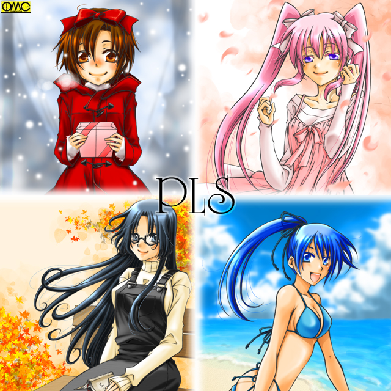

このイラストはＯＭＣによって作成されました。
クリエイターの藤本渚さんに感謝！
ＰＬＳのＣＭを作りました。ご覧ください。
ストーリー
第１話「Ｗｉｌｄ Ｈｅａｖｅｎ」
少女たちは恋をしていた。
愛される少年たちは別のほうを見ていた。
様々な思惑が絡み合いプラトニックに、パワフルに。
そしてパニックを起こしつつのラブストーリー。
新シリーズラブコメディ「ＰＬＳ」
２００７年元日スタート。
Ｐａｒｔ１ Ｐａｒｔ２ Ｐａｒｔ３ Ｐａｒｔ４ 第１話製作ノート
第２話「Ｇｅｔ Ｗｉｌｄ」
スーツアクター志望の裕生は学校でも無茶なアクションをする。そんな裕生が気が気でない詩穂理。
だが彼女自身も隠したいことが露見する寸前。
果たして詩穂理の秘密とは？ そして裕生が無茶をする理由とは？
Ｐａｒｔ１ Ｐａｒｔ２ Ｐａｒｔ３ Ｐａｒｔ４ 第２話製作ノート
第３話「大地の物語」
家庭科部に入部した妹を見守るため部活に関わるようになった大地大樹。思い人の部活参加で緊張する美鈴。
そして彼女を驚かせる事実が判明した。
Ｐａｒｔ１ Ｐａｒｔ２ Ｐａｒｔ３ Ｐａｒｔ４ 第３話製作ノート
第４話「Ｆａｎｔａｓｔｉｃ Ｖｉｓｉｏｎ」
学園一のいい男と評判の「サッカー部の王子様」恭兵は常に女の子と触れ合っている。それは探しているものがあるからなのだが…
そして恭兵に思いを寄せるなぎさは、得意のスポーツのように恋にはアクティブになれない。
Ｐａｒｔ１ Ｐａｒｔ２ Ｐａｒｔ３ Ｐａｒｔ４ 第４話製作ノート
第５話「Ｍａｒｉａ Ｃｌｕｂ」
五月。新しい生徒会役員選挙の時期。権力に固執する海老沢瑠美奈が真っ先に立候補した。不信任確実といえど万が一当選されてはたまらないキャラクター。
対抗としてまりあが担ぎ出されるのだが…波乱の生徒会選挙。
Ｐａｒｔ１ Ｐａｒｔ２ Ｐａｒｔ３ Ｐａｒｔ４ 第５話製作ノート
第６話「Ｐａｓｓｅｎｇｅｒ」
留学生。アンナ・ホワイト。彼女が恋をした？ それも相手は親友である双葉の兄。大樹かやはり親友である千尋の兄の裕生。
妹としての立場と、親友としての立場の二人は。そしてアンナは恋に落ちたのか？
Ｐａｒｔ１ Ｐａｒｔ２ Ｐａｒｔ３ Ｐａｒｔ４ 第６話製作ノート
第７話「Ｔｉｍｅ Ｐａｓｓｅｄ Ｍｅ Ｂｙ」
少女はなぜ、少年を愛するようになったのか？ 少年はなぜ、少女を嫌い男に走るようになったのか？
女子グループ。男子グループそれぞれで明かされるまりあと優介の過去。
Ｐａｒｔ１ Ｐａｒｔ２ Ｐａｒｔ３ Ｐａｒｔ４ 第７話製作ノート
第８話「Ｆａｌｌｉｎ’ Ａｎｇｅｌ」
魔性？ それとも母性？ 三年生の栗原美百合は上品だが天然ボケ。そして誰もを抱き締める。
だが笑顔の裏に隠されたものを感じ取った恭兵は…
Ｐａｒｔ１ Ｐａｒｔ２ Ｐａｒｔ３ Ｐａｒｔ４ 第８話製作ノート
第９話「Ｊｕｓｔ Ｌｉｋｅ Ｐａｒａｄｉｓｅ」
夏。プール開き。泳げない上に体形にコンプレックスを持つ美鈴と詩穂理は憂鬱に。逆になぎさは待望の水泳授業に大張り切り。
そしてまりあの提案で海水浴へとでむくことになり、そこでも珍騒動が。
Ｐａｒｔ１ Ｐａｒｔ２ Ｐａｒｔ３ Ｐａｒｔ４ Ｐａｒｔ５ Ｐａｒｔ６ 第９話製作ノート
第１０話「Ｆｉｇｈｔｉｎｇ」
蒼空学園。女子空手部。鬼の女主将・芦谷あすか。そのもう一つの顔とは？
そして成り行きであすかに関わった大樹たちは？
Ｐａｒｔ１ Ｐａｒｔ２ Ｐａｒｔ３ Ｐａｒｔ４ 第１０話製作ノート
第１１話「あの夏を忘れない」
日本。否。世界最大級の同人誌即売イベント。ブックトレードフェスティバル。略称トレス。
そこにさまざまな思惑で出向くまりあたち。待ち構えていたのはまさに水を得た魚。里見恵子。
Ｐａｒｔ１ Ｐａｒｔ２ Ｐａｒｔ３ Ｐａｒｔ４ 第１１話製作ノート
第１２話｢８月の長い夜｣
夏休み終盤に行われた夏祭り。夜店に縁のなかったまりあははしゃぎまくる。
さらにさまざまな面子が加わり珍騒動が。
Ｐａｒｔ１ Ｐａｒｔ２ Ｐａｒｔ３ Ｐａｒｔ４ 第１２話製作ノート
第１３話「Ｔｏｍｏｒｒｏｗ Ｍａｄｅ Ｎｅｗ」
二学期開始。その初日に編入してきたのは祭りの日に出会った澤矢理子。
女子相手に再会を喜ぶ優介。苦い顔のまりあ。そして理子には重大な秘密が？
Ｐａｒｔ１ Ｐａｒｔ２ Ｐａｒｔ３ Ｐａｒｔ４ 第１３話製作ノート
第１４話「Ｆｏｏｌ ｏｎ ｔｈｅ Ｐｌａｎｅｔ」
心は男で肉体は少女と言う最強の恋敵。澤矢理子。
その強敵を前に余裕のなくなったまりあはとんでもない行動に出た。
Ｐａｒｔ１ Ｐａｒｔ２ Ｐａｒｔ３ Ｐａｒｔ４ 第１４話制作ノート
第１５話「Ｊｕｓｔ Ｏｎｅ Ｖｉｃｔｏｒｙ」
蒼空学園体育祭開催。さまざまな競技で全力を尽くすまりあたち。
しかし優介に大ピンチが訪れることに。そして勝敗の行方は？
Ｐａｒｔ１ Ｐａｒｔ２ Ｐａｒｔ３ Ｐａｒｔ４ 第１５話制作ノート
第１６話「Ｎｅｒｖｏｕｓ」
学園祭ライブに向けて猛練習を開始したまりあたち。
一方、双葉は兄へと募る思いが高まっていく。
血のつながりがないことを知らない大地兄妹は…
第１７話「Ｒｈｙｔｈｍ Ｒｅｄ Ｂｅａｔ Ｂｌａｃｋ」
文化祭開幕。２−Ｄのお化け屋敷で騒動が。少女たちは普段と違う姿で参加する「美人コンテスト」に出場する。
そして軽音楽部の存亡をかけたライブの成否は？
Ｐａｒｔ１ Ｐａｒｔ２ Ｐａｒｔ３ Ｐａｒｔ４ 第１７話制作ノート
第１８話「Ａ Ｄａｙ ｉｎ Ｔｈｅ Ｇｉｒｌ’ｓ Ｌｉｆｅ」
バンド練習で「友達」になった理子を交えた「女子だけの親睦会」を行うまりあたち。しかし箱入り娘にとって町は魅惑の場所で。行く先々で珍騒動を。
果たして。まりあにとって理子とは友達なのか？ 恋敵なのか？
Ｐａｒｔ１ Ｐａｒｔ２ Ｐａｒｔ３ Ｐａｒｔ４ 第１８話制作ノート
第１９話「Ｌｏｖｅ Ｔｒａｉｎ」
修学旅行。恋する少女たちを乗せて新幹線は走る。古都・京都を舞台に珍騒動が巻き起こる。
そして女として優介に恋をしていることを自覚した理子の動向は？
Ｐａｒｔ１ Ｐａｒｔ２ Ｐａｒｔ３ Ｐａｒｔ４ Ｐａｒｔ５ Ｐａｒｔ６ 第１９話制作ノート
第２０話「Ｄｒｅａｍｓ ｏｆ Ｘ’ｍａｓ」
理子とのお別れパーティーとしてまりあはクリスマスパーティに理子を招いた。そこで湧き起こる騒動。
そして意外な形で理子の次の居場所が。
Ｐａｒｔ１ Ｐａｒｔ２ Ｐａｒｔ３ Ｐａｒｔ４ ＥＸＴＲＡ 第２０話制作ノート
第２１話「Ｃｏｍｅ Ｏｎ Ｅｖｅｒｙｂｏｄｙ」
年が明け八人揃っての初詣。冬休みに入ってあってなかったのもあり近況報告に花が咲く。
そんな中、優介の態度だけがどこか沈んでいるのにまりあ以外も気が付いた。
Ｐａｒｔ１ Ｐａｒｔ２ Ｐａｒｔ３ Ｐａｒｔ４ 第２１話制作ノート
第２２話「一途な恋」
冬休みのスキー合宿でとんでもない事態が発生。孤立する恭兵。
なぎさの心すら離れかかるがその抱いてきた思いがそれをさせなかった。
５０万ヒット記念作品 オールスタークロスオーバー
セーラー服に身を包んだまりあに姫子が微笑み、裕生と上条がオタトークを繰り広げ、さらには二村司や高岩清良もいる番外編。
城弾シアター十周年記念企画
月にかけてしまった願いで優介は女の子になってしまった。
男相手には好都合と喜ぶ優介。同性となってしまったことでこの恋が絶望的になるまりあは激しく落ち込む。
果たして優介は元に戻るのか？
ＰＬＳ特別編 「Ｃｈａｓｅ ｉｎ Ｌａｂｙｌｉｎｔｈ」
恋せよ乙女。愛せよ少年
ＰＬＳ〜Ｃｈａｓｅ ｉｎ Ｌａｂｙｒｉｎｔｈ〜
城弾シアター１５周年企画